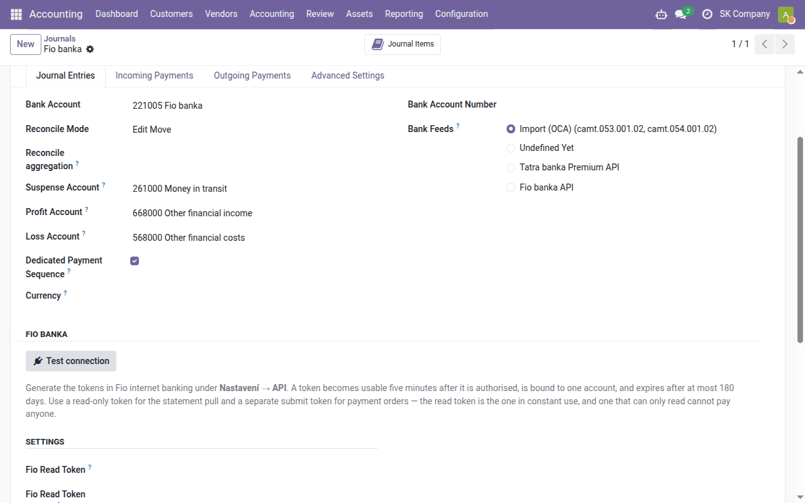

Task guide
Fio banka — automatic statements
Movements on a Fio banka account arrive in Odoo by themselves every hour, with payment symbols and the counterparty's account — all it takes is an internet-banking token on the bank journal.
| Country | Czech Republic and Slovakia |
|---|---|
| Edition | Odoo Community |
| Covers | account_fio, account_statement_fio, l10n_cssk_payment_symbols, l10n_cssk_payment_symbols_oca |
What this guide is for
With this setup the bank journal of a Fio banka account fills itself: every hour Odoo asks Fio for new movements and creates statement lines with the counterparty's account, the variable, constant and specific symbols and the message to the payee. Nothing is downloaded from internet banking or imported. It works for Slovak and Czech Fio accounts alike.
The lines are then matched exactly as lines of an imported statement — automatically by variable symbol, and by hand in Reconcile — as the Bank guide describes.
You install the modules yourself from Apps. A journal is fed by one route only — its Bank Feeds field holds a single value — so the same movement never arrives twice.
The token in internet banking
In Fio internet banking open Nastavení → API and create a read-only token for the account to synchronise. A token belongs to one account, is valid for at most 180 days and becomes usable five minutes after it is authorised. Note its expiry date as well. Payment orders from Odoo would need a separate write token; statements only need the read token, which cannot pay anyone.
Setting up the journal
- Once, install the Fio banka — bank statements module from Apps.
- Open the bank journal of the Fio account (Accounting → Configuration → Accounting → Journals; a new one is created as in the Bank guide). Its Bank Account Number must be the account the token belongs to.
- In the Fio banka section fill in Fio Read Token and Fio Read Token Expires and click Test connection. Odoo makes one call to Fio, shows what the bank reports about the account (account number, IBAN, currency) and writes it to the journal's history. A token of another account, or of an account in another currency than the journal's, is refused.
- Set Bank Feeds to Fio banka API, choose the Fio Pull Mode (below) and click Pull now.

From then on the journal is pulled every hour. Only administrators see and enter the tokens. All journals with a token and their expiry dates are listed in Accounting → Configuration → Accounting → Fio banka; a date already passed is red. Before a token expires, create a new one in internet banking and replace it on the journal.
Each currency account at Fio needs its own journal in that currency, with its own token.
Pull mode
| Fio Pull Mode | What each pull does | When to choose it |
|---|---|---|
| Movements (default) | reads the movements of the last Fio re-read days (3 by default) and adds those Odoo does not have | everyday matching |
| Official numbered statements | downloads every statement issued by the bank that Odoo lacks, with the bank's opening and closing balance | when you want statements in Odoo identical to the bank's |
| Since the bookmark on the token | downloads everything since the bookmark Fio keeps | only with a token nothing else uses |
Movements of an earlier period are downloaded with Pull a range… on the journal. Fio provides movements older than 90 days only while the token's history is unlocked in internet banking (Nastavení → API, the padlock), and the unlock lasts ten minutes.
If you have been importing GPC files, switch at a day boundary: import the last statement and start pulling the next day — movements from GPC and from the API do not recognise each other.
Checking
- The journal shows Fio Last Pull At.
- A failed pull is written to the journal's history with the bank's reason; the other journals are pulled regardless.
- At month end compare the closing balance in Odoo with the balance on the bank's statement, as in the Bank guide.